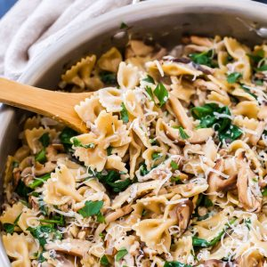

Creamy Mushroom and Spinach Pasta

Description
LIndulge in a creamy and satisfying pasta dish with this recipe featuring earthy mushrooms, delicate spinach, and a luscious cream sauce. Perfect for a cozy dinner at home or entertaining guests, this dish combines comforting flavors with a touch of elegance. It's a versatile recipe that can easily be customized to suit your taste preferences, making it a go-to favorite for pasta lovers everywhere.
Ingredients
- 350g pasta of your choice
- 250g mushrooms (buttom or cremini), sliced
- 90g of fresh spinach leaves
- 4 cloves garlic, minced
- 1 onion chopped
- 2 tablespoons of unsalted butter
- 2 tablespoons olive oil
- 1 cup of heavy cream
- Salt and pepper to taste
- Fresh parsley, chopped
- 50g grated parmesan cheese
Instrucions
- Cook the pasta: Bring a large pot of salted water to a boil. Cook the pasta according to the package instructions until al dente. Reserve about 1/2 cup of pasta water, then drain the pasta and set aside.
- Salté Mushrooms and Onions: In a large skillet, heat the olive oil and butter over medium heat. Add the chopped onion and minced garlic, and sauté until softened and fragrant, about 2-3 minutes. Add the sliced mushrooms to the skillet and cook until they are golden brown and tender, stirring occasionally, about 5-6 minutes
- Add Spinach and Cream: Once the mushrooms are cooked, add the fresh spinach leaves to the skillet. Cook until the spinach wilts down, about 2 minutes. Pour in the heavy cream and stir well to combine. Allow the cream to simmer gently for 2-3 minutes to thicken slightly.
- Combine Pasta and Sauce: Add the cooked pasta to the skillet with the creamy mushroom and spinach sauce. Toss everything together until the pasta is evenly coated in the sauce. If the sauce seems too thick, you can add a splash of the reserved pasta water to thin it out.
Season and Serve: Stir in the grated Parmesan cheese, and season with salt and pepper to taste. Continue to toss the pasta until the cheese is melted and the sauce is creamy. Taste and adjust seasoning if necessary.
- Garnish and Serve: Transfer the creamy mushroom and spinach pasta to serving plates or a large serving dish. Garnish with chopped fresh parsley for a pop of color and flavor. Serve hot and enjoy this decadent and comforting pasta dish!
This creamy mushroom and spinach pasta is sure to impress with its rich flavors and luxurious texture. It's a delightful meal that will leave everyone at the table wanting more. Enjoy!